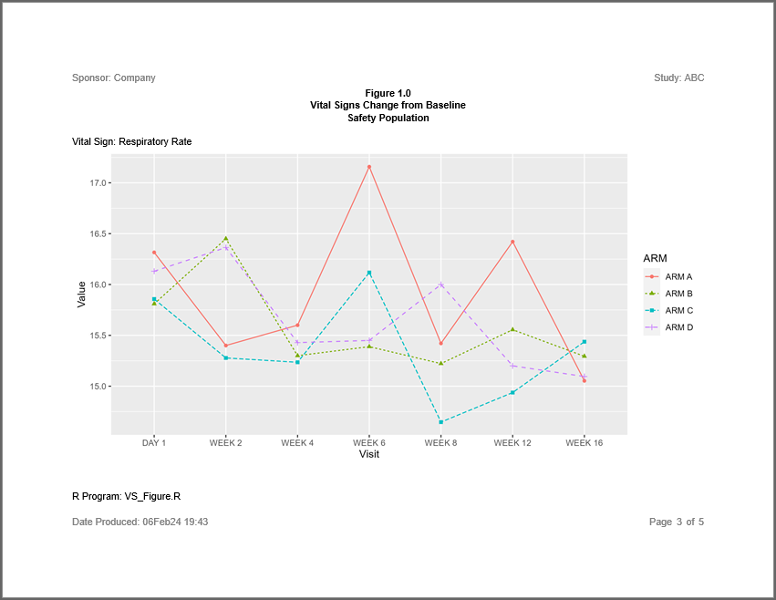

The sassy package is a meta-package that aims to make R easier for SAS® programmers. The package brings several familiar SAS® concepts to R, including data libraries, formats and format catalogs, data dictionaries, a data step, a traceable log, and a reporting package with a variety of printable report types.
The sassy family of packages is meant to compliment, not replace, the tidyverse. While the tidyverse focuses mainly on data manipulation, the sassy packages are focused more on formatting and reporting. For most projects, it is expected that users will load both the tidyverse and sassy meta-packages. Between these two, the user will typically have everything they need to easily manipulate and report on their data.
Note that the sassy meta-package and sub-packages were written independently, and the authors have no association with, approval of, or endorsement by SAS® Institute or RStudio®.
Included Packages
The sassy meta-package contains the following packages:
- logr: Produces a traceable log
- fmtr: Provides functions for formatting data and a creating a format catalog
- libr: Gives you the ability to define a libname, generate a data dictionary, and simulate a data step
- reporter: A reporting package with easy layout capabilities and the ability to write reports in TXT, RTF, and PDF file formats
How to use sassy
All combined, the above set of packages constitute a system of functions that make working in R more like working in SAS®. With the sassy system, you can define a library in one step, save and re-use formats, step through data row-by-row, and get a report out in just a few lines of code. Importantly, all of the above activities can be recorded in a traceable log.
Example #1: Listing
Here is an example of a simple listing using the sassy system of functions. The data used for these examples is included in the sassy package, and also available for download here.
Note the following about this example:
- The logr package provides a simple, convenient logging mechanism.
- The
sep()function creates a nice separator in the log to help keep it organized and readable. - The
put()function will write anything you want to the log, similar to a SAS®%put()statement. - The
libname()function loads an entire directory of data files in one step. - The
lib_load()function loads the data into the workspace for easy access. - The reporter package will set column widths, page wraps, and page breaks by default.
library(sassy)
options("logr.notes" = FALSE)
# Get path to temp directory
tmp <- tempdir()
# Get path to sample data
pkg <- system.file("extdata", package = "sassy")
# Open log
lgpth <- log_open(file.path(tmp, "example1.log"))
sep("Get Data")
# Define data library
libname(sdtm, pkg, "csv") %>% put()
# Load library into workspace
lib_load(sdtm)
sep("Write Report")
# Define table object
tbl <- create_table(sdtm.DM) %>%
define(USUBJID, id_var = TRUE)
# Construct report path
pth <- file.path(tmp, "output/l_dm.rtf") %>% put()
# Define report object
rpt <- create_report(pth, output_type = "RTF") %>%
page_header("Sponsor: Company", "Study: ABC") %>%
titles("Listing 1.0", "SDTM Demographics") %>%
add_content(tbl, align = "left") %>%
page_footer(Sys.time(), "CONFIDENTIAL", "Page [pg] of [tpg]")
# Write report to file system
write_report(rpt) %>% put()
# Unload data
lib_unload(sdtm)
# Close log
log_close()
Here is the log produced by the above listing example:
=========================================================================
Log Path: C:/Users/User/AppData/Local/Temp/RtmpsRnVcf/log/example1.log
Working Directory: C:/packages/sassy
User Name: User
R Version: 4.0.3 (2020-10-10)
Machine: ZB15-5CD00276ZY x86-64
Operating System: Windows 10 x64 build 18363
Log Start Time: 2020-12-13 17:27:21
=========================================================================
=========================================================================
Get Data
=========================================================================
# library 'sdtm': 10 items
- attributes: csv not loaded
- path: data
- items:
Name Extension Rows Cols Size LastModified
1 AE csv 150 27 88 Kb 2020-09-18 14:30:23
2 DA csv 3587 18 527.8 Kb 2020-09-18 14:30:23
3 DM csv 87 24 45.1 Kb 2020-09-18 14:30:23
4 DS csv 174 9 33.6 Kb 2020-09-18 14:30:23
5 EX csv 84 11 25.9 Kb 2020-09-18 14:30:23
6 IE csv 2 14 12.9 Kb 2020-09-18 14:30:23
7 PE csv 1854 17 277.7 Kb 2020-09-18 14:30:24
8 SUPPEX csv 639 10 63.5 Kb 2020-09-18 14:30:24
9 SV csv 685 10 69.8 Kb 2020-09-18 14:30:24
10 VS csv 3358 17 466.9 Kb 2020-09-18 14:30:24
=========================================================================
Write Report
=========================================================================
C:\Users\User\AppData\Local\Temp\RtmpsRnVcf/output/l_dm.rtf
# A report specification: 9 pages
- file_path: 'C:\Users\User\AppData\Local\Temp\RtmpsRnVcf/output/l_dm.rtf'
- output_type: RTF
- units: inches
- orientation: landscape
- line size/count: 108/48
- page_header: left=Sponsor: Company right=Study: ABC
- title 1: 'Listing 1.0'
- title 2: 'SDTM Demographics'
- page_footer: left=2020-12-13 17:27:41 center=CONFIDENTIAL right=Page [pg] of [tpg]
- content:
# A table specification:
- data: tibble 'sdtm.DM' 87 rows 24 cols
- show_cols: all
- use_attributes: all
- define: USUBJID id_var='TRUE'
=========================================================================
Log End Time: 2020-12-13 17:27:45
Log Elapsed Time: 0 00:00:23
=========================================================================
Here is an image of the first page of the RTF report produced by the above listing example:

Example 2: Summary Table
The second example produces a summary table of selected Vital Signs for Placebo vs. Treated groups. The report shows statistics for both baseline and after-treatment time points.
Note the following about this example:
- The logr package combined with tidylog provides automatic logging for dplyr and tidyr functions.
- The
datastep()function allows for a complex conditional in the middle of a dplyr pipeline.
- The
%eq%operator allows comparing of a variable that contains many NA values, without error. - The fmtr package provides several convenient functions for calculating and formatting summary statistics.
- The fmtr package also provides capabilities to create a user-defined format, similar to
proc format. - The reporter package supports spanning headers and ‘N=’ population counts in the header labels.
- The reporter package also allows you to define a stub column of hierarchical labels.
library(tidyverse)
library(sassy)
library(tidylog, warn.conflicts = FALSE)
options("tidylog.display" = list(log_print),
"logr.notes" = FALSE)
# Get path to temp directory
tmp <- tempdir()
# Get path to sample data
pkg <- system.file("extdata", package = "sassy")
# Open log
lgpth <- log_open(file.path(tmp, "example2.log"))
sep("Prepare Data")
# Create libname for csv data
libname(sdtm, pkg, "csv") %>% put()
# Load data into workspace
lib_load(sdtm)
put("Join and prepare data")
prep <- sdtm.DM %>%
left_join(sdtm.VS, by = c("USUBJID" = "USUBJID")) %>%
select(USUBJID, VSTESTCD, VISIT, VISITNUM, VSSTRESN, ARM, VSBLFL) %>%
filter(VSTESTCD %in% c("PULSE", "RESP", "TEMP", "DIABP", "SYSBP"),
!(VISIT == "SCREENING" & VSBLFL != "Y")) %>%
arrange(USUBJID, VSTESTCD, VISITNUM) %>%
group_by(USUBJID, VSTESTCD) %>%
datastep(retain = list(BSTRESN = 0), {
# Combine treatment groups
# And distingish baseline time points
if (ARM == "ARM A") {
if (VSBLFL %eq% "Y") {
GRP <- "A_BASE"
} else {
GRP <- "A_TRT"
}
} else {
if (VSBLFL %eq% "Y") {
GRP <- "O_BASE"
} else {
GRP <- "O_TRT"
}
}
# Populate baseline value
if (first.)
BSTRESN = VSSTRESN
}) %>%
ungroup() %>%
put()
put("Get population counts")
pop_A <- prep %>% select(USUBJID, GRP) %>% filter(GRP == "A_BASE") %>%
distinct() %>% count() %>% deframe() %>% put()
pop_O <- prep %>% select(USUBJID, GRP) %>% filter(GRP == "O_BASE") %>%
distinct() %>% count() %>% deframe() %>% put()
put("Prepare final data frame")
final <- prep %>%
select(VSTESTCD, GRP, VSSTRESN, BSTRESN) %>%
group_by(VSTESTCD, GRP) %>%
summarize(Mean = fmt_mean_sd(VSSTRESN),
Median = fmt_median(VSSTRESN),
Quantiles = fmt_quantile_range(VSSTRESN),
Range = fmt_range(VSSTRESN)) %>%
ungroup() %>%
pivot_longer(cols = c(Mean, Median, Quantiles, Range),
names_to = "stats",
values_to = "values") %>%
pivot_wider(names_from = GRP,
values_from = values) %>%
put()
sep("Create formats")
# Vital sign lookup format
vs_fmt <- c(PULSE = "Pulse",
TEMP = "Temperature °C",
RESP = "Respirations/min",
SYSBP = "Systolic Blood Pressure",
DIABP = "Diastolic Blood Pressure") %>%
put()
# Statistics user-defined format
stat_fmt <- value(condition(x == "Mean", "Mean (SD)"),
condition(x == "Quantiles", "Q1 - Q3")) %>%
put()
sep("Create Report")
# Apply sort
final <- final %>%
mutate(VSTESTCD = factor(VSTESTCD, levels = names(vs_fmt))) %>%
arrange(VSTESTCD)
# Define table object
tbl <- create_table(final) %>%
spanning_header(A_BASE, A_TRT, "Placebo", n = pop_A) %>%
spanning_header(O_BASE, O_TRT, "Treated", n = pop_O) %>%
column_defaults(width = 1.25, align = "center") %>%
stub(c(VSTESTCD, stats), width = 2.5) %>%
define(VSTESTCD, "Vital Sign", format = vs_fmt,
blank_after = TRUE, dedupe = TRUE, label_row = TRUE) %>%
define(stats, indent = .25, format = stat_fmt) %>%
define(A_BASE, "Baseline") %>%
define(A_TRT, "After Treatment") %>%
define(O_BASE, "Baseline") %>%
define(O_TRT, "After Treatment")
# Construct output path
pth <- file.path(tmp, "output/t_vs.rtf")
# Define report object
rpt <- create_report(pth, output_type = "RTF") %>%
page_header("Sponsor: Company", "Study: ABC") %>%
titles("Table 4.0", "Selected Vital Signs") %>%
add_content(tbl, align = "center") %>%
page_footer(Sys.time(), "CONFIDENTIAL", "Page [pg] of [tpg]")
# Write report to file system
write_report(rpt) %>% put()
# Unload data from workspace
lib_unload(sdtm)
# Close log
log_close()
# Disconnect logr from tidylog
options("tidylog.display" = FALSE)
Here is the log from the above example:
=========================================================================
Log Path: C:/Users/User/AppData/Local/Temp/RtmpohmQm6/log/example2.log
Working Directory: C:/packages/sassy
User Name: User
R Version: 4.0.3 (2020-10-10)
Machine: ZB15-5CD00276ZY x86-64
Operating System: Windows 10 x64 build 18363
Log Start Time: 2020-12-17 16:26:30
=========================================================================
=========================================================================
Prepare Data
=========================================================================
# library 'sdtm': 10 items
- attributes: csv not loaded
- path: C:/Users/User/Documents/R/win-library/4.0/sassy/extdata
- items:
Name Extension Rows Cols Size LastModified
1 AE csv 150 27 88.1 Kb 2020-12-15 14:00:42
2 DA csv 3587 18 527.8 Kb 2020-12-15 14:00:42
3 DM csv 87 24 45.2 Kb 2020-12-15 14:00:42
4 DS csv 174 9 33.7 Kb 2020-12-15 14:00:42
5 EX csv 84 11 26 Kb 2020-12-15 14:00:42
6 IE csv 2 14 13 Kb 2020-12-15 14:00:42
7 PE csv 1854 17 277.9 Kb 2020-12-15 14:00:42
8 SUPPEX csv 639 10 63.7 Kb 2020-12-15 14:00:42
9 SV csv 685 10 69.9 Kb 2020-12-15 14:00:42
10 VS csv 3358 17 467 Kb 2020-12-15 14:00:42
Join and prepare data
left_join: added 18 columns (STUDYID.x, DOMAIN.x, STUDYID.y, DOMAIN.y, VSSEQ, …)
> rows only in x 0
> rows only in y ( 0)
> matched rows 3,358 (includes duplicates)
> =======
> rows total 3,358
select: dropped 33 variables (STUDYID.x, DOMAIN.x, SUBJID, RFSTDTC, RFENDTC, …)
filter: removed 590 rows (18%), 2,768 rows remaining
group_by: 2 grouping variables (USUBJID, VSTESTCD)
ungroup: no grouping variables
# A tibble: 2,768 x 9
USUBJID VSTESTCD VISIT VISITNUM VSSTRESN ARM VSBLFL BSTRESN GRP
<chr> <chr> <chr> <dbl> <dbl> <chr> <chr> <dbl> <chr>
1 ABC-01-049 DIABP DAY 1 1 76 ARM D Y 76 O_BASE
2 ABC-01-049 DIABP WEEK 2 2 66 ARM D <NA> 76 O_TRT
3 ABC-01-049 DIABP WEEK 4 4 84 ARM D <NA> 76 O_TRT
4 ABC-01-049 DIABP WEEK 6 6 68 ARM D <NA> 76 O_TRT
5 ABC-01-049 DIABP WEEK 8 8 80 ARM D <NA> 76 O_TRT
6 ABC-01-049 DIABP WEEK 12 12 70 ARM D <NA> 76 O_TRT
7 ABC-01-049 DIABP WEEK 16 16 70 ARM D <NA> 76 O_TRT
8 ABC-01-049 PULSE DAY 1 1 84 ARM D Y 84 O_BASE
9 ABC-01-049 PULSE WEEK 2 2 84 ARM D <NA> 84 O_TRT
10 ABC-01-049 PULSE WEEK 4 4 76 ARM D <NA> 84 O_TRT
# ... with 2,758 more rows
Get population counts
select: dropped 7 variables (VSTESTCD, VISIT, VISITNUM, VSSTRESN, ARM, …)
filter: removed 2,669 rows (96%), 99 rows remaining
distinct: removed 79 rows (80%), 20 rows remaining
count: now one row and one column, ungrouped
[1] 20
select: dropped 7 variables (VSTESTCD, VISIT, VISITNUM, VSSTRESN, ARM, …)
filter: removed 2,435 rows (88%), 333 rows remaining
distinct: removed 266 rows (80%), 67 rows remaining
count: now one row and one column, ungrouped
[1] 67
Prepare final data frame
select: dropped 5 variables (USUBJID, VISIT, VISITNUM, ARM, VSBLFL)
group_by: 2 grouping variables (VSTESTCD, GRP)
summarize: now 20 rows and 6 columns, one group variable remaining (VSTESTCD)
ungroup: no grouping variables
pivot_longer: reorganized (Mean, Median, Quantiles, Range) into (stats, values) [was 20x6, now 80x4]
pivot_wider: reorganized (GRP, values) into (A_BASE, A_TRT, O_BASE, O_TRT) [was 80x4, now 20x6]
# A tibble: 20 x 6
VSTESTCD stats A_BASE A_TRT O_BASE O_TRT
<chr> <chr> <chr> <chr> <chr> <chr>
1 DIABP Mean 77.2 (10.7) 77.1 (8.1) 77.5 (8.1) 76.9 (9.2)
2 DIABP Median 78.5 78.0 78.0 78.0
3 DIABP Quantiles 70.0 - 82.5 72.0 - 82.0 70.2 - 82.0 70.0 - 83.8
4 DIABP Range 54 - 96 50 - 98 61 - 95 50 - 104
5 PULSE Mean 72.8 (10.1) 74.6 (10.2) 73.6 (9.7) 74.0 (9.9)
6 PULSE Median 72.0 74.0 72.0 72.0
7 PULSE Quantiles 66.0 - 76.0 67.0 - 80.0 67.5 - 79.5 66.0 - 80.0
8 PULSE Range 60 - 103 54 - 102 52 - 100 50 - 109
9 RESP Mean 16.5 (2.5) 15.8 (3.4) 16.0 (3.1) 15.4 (3.4)
10 RESP Median 16.0 16.0 16.0 16.0
11 RESP Quantiles 16.0 - 18.0 16.0 - 18.0 15.5 - 18.0 12.0 - 18.0
12 RESP Range 12 - 20 8 - 24 8 - 22 8 - 24
13 SYSBP Mean 128.2 (16.7) 130.4 (17.6) 126.7 (15.5) 125.9 (15.2)
14 SYSBP Median 125.5 126.0 123.0 124.0
15 SYSBP Quantiles 117.5 - 140.0 118.0 - 140.0 116.0 - 138.0 115.2 - 135.0
16 SYSBP Range 98 - 161 95 - 184 100 - 164 82 - 180
17 TEMP Mean 36.5 (0.4) 36.5 (0.3) 36.4 (0.5) 36.3 (0.4)
18 TEMP Median 36.4 36.5 36.4 36.3
19 TEMP Quantiles 36.2 - 36.9 36.2 - 36.6 36.2 - 36.6 36.1 - 36.5
20 TEMP Range 35.9 - 37.4 35.8 - 37.3 35.3 - 39.8 34.4 - 38.2
=========================================================================
Create formats
=========================================================================
PULSE TEMP RESP SYSBP DIABP
"Pulse" "Temperature °C" "Respirations/min" "Systolic Blood Pressure" "Diastolic Blood Pressure"
# A user-defined format: 2 conditions
Name Type Expression Label Order
1 x U x == "Mean" Mean (SD) NA
2 x U x == "Quantiles" Q1 - Q3 NA
=========================================================================
Create Report
=========================================================================
mutate: converted 'VSTESTCD' from character to factor (0 new NA)
# A report specification: 1 pages
- file_path: 'C:\Users\User\AppData\Local\Temp\RtmpohmQm6/output/t_vs.rtf'
- output_type: RTF
- units: inches
- orientation: landscape
- line size/count: 108/48
- page_header: left=Sponsor: Company right=Study: ABC
- title 1: 'Table 4.0'
- title 2: 'Selected Vital Signs'
- page_footer: left=2020-12-17 16:26:33 center=CONFIDENTIAL right=Page [pg] of [tpg]
- content:
# A table specification:
- data: tibble 'final' 20 rows 6 cols
- show_cols: all
- use_attributes: all
- spanning_header: from='A_BASE' to='A_TRT' 'Placebo' level=1
- spanning_header: from='O_BASE' to='O_TRT' 'Treated' level=1
- stub: VSTESTCD stats width=2.5 align='left'
- define: VSTESTCD 'Vital Sign' dedupe='TRUE'
- define: stats
- define: A_BASE 'Baseline'
- define: A_TRT 'After Treatment'
- define: O_BASE 'Baseline'
- define: O_TRT 'After Treatment'
=========================================================================
Log End Time: 2020-12-17 16:26:33
Log Elapsed Time: 0 00:00:02
=========================================================================
And here is the output report:

Example #3: Figure with Page By
The sassy system of functions also supports reports with graphics. Plots from the popular ggplot2 package can be added to a report. The following example illustrates such a report.
Note the following about this example:
- The plot is created as a single plot with no by-groups
- The plot is added to the report with the
add_content()function, just like the tables in the previous examples. - The
page_by()function on thecreate_report()statement generates the paging for both the report and plot. - Few other R packages support this type of reporting capability.
library(tidyverse)
library(sassy)
library(tidylog, warn.conflicts = FALSE)
options("tidylog.display" = list(log_print),
"logr.notes" = FALSE)
# Get path to temp directory
tmp <- tempdir()
# Get path to sample data
pkg <- system.file("extdata", package = "sassy")
# Open log
lgpth <- log_open(file.path(tmp, "example3.log"))
sep("Prepare Data")
# Create libname for csv data
libname(sdtm, pkg, "csv") %>% put()
# Load data into workspace
lib_load(sdtm)
put("Perform joins and basic filters")
prep <- sdtm.DM %>%
left_join(sdtm.VS, by = c("USUBJID" = "USUBJID")) %>%
select(USUBJID, ARMCD, ARM, VSTESTCD, VSTEST, VSORRES, VISITNUM, VISIT) %>%
filter(VSTESTCD %in% c("SYSBP", "DIABP", "PULSE", "TEMP", "RESP"),
ARMCD != "SCRNFAIL") %>% put()
put("Group and summarize")
final <- prep %>%
group_by(ARMCD, ARM, VSTESTCD, VSTEST, VISITNUM, VISIT) %>%
summarize(MEAN = mean(VSORRES, na.rm = TRUE)) %>%
filter(VISITNUM > 0 & VISITNUM < 20) %>%
mutate(VISIT = factor(VISIT, levels = c("DAY 1", "WEEK 2", "WEEK 4",
"WEEK 6","WEEK 8", "WEEK 12",
"WEEK 16"))) %>%
ungroup() %>% put()
sep("Create plots and print report")
# Create plot
p <- final %>%
ggplot(mapping = aes(y = MEAN, x = VISIT , group = ARM)) +
geom_point(aes(shape = ARM, color = ARM)) +
geom_line(aes(linetype = ARM, color = ARM)) +
scale_x_discrete(name = "Visit") +
scale_y_continuous(name = "Value")
# Construct output path
pth <- file.path(tmp, "output/f_vs.rtf")
# Define report object
rpt <- create_report(pth, output_type = "RTF") %>%
set_margins(top = 1, bottom = 1) %>%
page_header("Sponsor: Company", "Study: ABC") %>%
page_by(VSTEST, "Vital Sign: ", blank_row = "none") %>%
titles("Figure 1.0", "Vital Signs Change from Baseline",
"Safety Population") %>%
add_content(create_plot(p, 4.5, 9)) %>%
footnotes("R Program: VS_Figure.R") %>%
page_footer(paste0("Date Produced: ", fapply(Sys.time(), "%d%b%y %H:%M")),
right = "Page [pg] of [tpg]")
# Write report to file system
write_report(rpt) %>% put()
# Close log
log_close()
# Disconnect logr from tidylog
options("tidylog.display" = NULL)
Here is the log for the above program:
=========================================================================
Log Path: C:/Users/User/AppData/Local/Temp/RtmpsRnVcf/log/example3.log
Working Directory: C:/packages/sassy
User Name: User
R Version: 4.0.3 (2020-10-10)
Machine: ZB15-5CD00276ZY x86-64
Operating System: Windows 10 x64 build 18363
Log Start Time: 2020-12-14 22:43:52
=========================================================================
=========================================================================
Prepare Data
=========================================================================
# library 'sdtm': 10 items
- attributes: csv not loaded
- path: C:/packages/sassy/inst/extdata
- items:
Name Extension Rows Cols Size LastModified
1 AE csv 150 27 88.1 Kb 2020-09-18 14:30:23
2 DA csv 3587 18 527.8 Kb 2020-09-18 14:30:23
3 DM csv 87 24 45.1 Kb 2020-09-18 14:30:23
4 DS csv 174 9 33.7 Kb 2020-09-18 14:30:23
5 EX csv 84 11 26 Kb 2020-09-18 14:30:23
6 IE csv 2 14 13 Kb 2020-09-18 14:30:23
7 PE csv 1854 17 277.8 Kb 2020-09-18 14:30:24
8 SUPPEX csv 639 10 63.6 Kb 2020-09-18 14:30:24
9 SV csv 685 10 69.9 Kb 2020-09-18 14:30:24
10 VS csv 3358 17 467 Kb 2020-09-18 14:30:24
Perform joins and basic filters
left_join: added 18 columns (STUDYID.x, DOMAIN.x, STUDYID.y, DOMAIN.y, VSSEQ, …)
> rows only in x 0
> rows only in y ( 0)
> matched rows 3,358 (includes duplicates)
> =======
> rows total 3,358
select: dropped 32 variables (STUDYID.x, DOMAIN.x, SUBJID, RFSTDTC, RFENDTC, …)
filter: removed 246 rows (7%), 3,112 rows remaining
# A tibble: 3,112 x 8
USUBJID ARMCD ARM VSTESTCD VSTEST VSORRES VISITNUM VISIT
<chr> <chr> <chr> <chr> <chr> <dbl> <dbl> <chr>
1 ABC-01-049 4 ARM D DIABP Diastolic Blood Pressure 78 0 SCREENING
2 ABC-01-049 4 ARM D DIABP Diastolic Blood Pressure 76 1 DAY 1
3 ABC-01-049 4 ARM D DIABP Diastolic Blood Pressure 66 2 WEEK 2
4 ABC-01-049 4 ARM D DIABP Diastolic Blood Pressure 84 4 WEEK 4
5 ABC-01-049 4 ARM D DIABP Diastolic Blood Pressure 68 6 WEEK 6
6 ABC-01-049 4 ARM D DIABP Diastolic Blood Pressure 80 8 WEEK 8
7 ABC-01-049 4 ARM D DIABP Diastolic Blood Pressure 70 12 WEEK 12
8 ABC-01-049 4 ARM D DIABP Diastolic Blood Pressure 70 16 WEEK 16
9 ABC-01-049 4 ARM D PULSE Pulse Rate 92 0 SCREENING
10 ABC-01-049 4 ARM D PULSE Pulse Rate 84 1 DAY 1
# ... with 3,102 more rows
Group and summarize
group_by: 6 grouping variables (ARMCD, ARM, VSTESTCD, VSTEST, VISITNUM, …)
summarize: now 175 rows and 7 columns, 5 group variables remaining (ARMCD, ARM, VSTESTCD, VSTEST, VISITNUM)
filter (grouped): removed 35 rows (20%), 140 rows remaining
mutate (grouped): converted 'VISIT' from character to factor (0 new NA)
ungroup: no grouping variables
# A tibble: 140 x 7
ARMCD ARM VSTESTCD VSTEST VISITNUM VISIT MEAN
<chr> <chr> <chr> <chr> <dbl> <fct> <dbl>
1 1 ARM A DIABP Diastolic Blood Pressure 1 DAY 1 76.5
2 1 ARM A DIABP Diastolic Blood Pressure 2 WEEK 2 77.6
3 1 ARM A DIABP Diastolic Blood Pressure 4 WEEK 4 78.7
4 1 ARM A DIABP Diastolic Blood Pressure 6 WEEK 6 74.4
5 1 ARM A DIABP Diastolic Blood Pressure 8 WEEK 8 77.1
6 1 ARM A DIABP Diastolic Blood Pressure 12 WEEK 12 78.4
7 1 ARM A DIABP Diastolic Blood Pressure 16 WEEK 16 77.3
8 1 ARM A PULSE Pulse Rate 1 DAY 1 72.6
9 1 ARM A PULSE Pulse Rate 2 WEEK 2 73.4
10 1 ARM A PULSE Pulse Rate 4 WEEK 4 75.8
# ... with 130 more rows
=========================================================================
Create plots and print report
=========================================================================
# A report specification: 5 pages
- file_path: 'C:\Users\User\AppData\Local\Temp\RtmpsRnVcf/output/f_vs.rtf'
- output_type: RTF
- units: inches
- orientation: landscape
- line size/count: 108/41
- page by: VSTEST
- page_header: left=Sponsor: Company right=Study: ABC
- title 1: 'Figure 1.0'
- title 2: 'Vital Signs Change from Baseline'
- title 3: 'Safety Population'
- footnote 1: 'R Program: VS_Figure.R'
- page_footer: left=Date Produced: 14Dec20 22:43 center= right=Page [pg] of [tpg]
- content:
# A plot specification:
- data: 140 rows, 7 cols
- layers: 2
- height: 4.5
- width: 9
=========================================================================
Log End Time: 2020-12-14 22:43:56
Log Elapsed Time: 0 00:00:04
=========================================================================
And here are the first three pages of the report:



Package Disclaimer
Note that the sassy family of packages is intended to be used with small and medium-sized data sets. It is not recommended for big data, as big data requires very careful control over which data is or is not loaded into memory. The sassy packages, on the other hand, tend to load all data into memory indiscriminately.